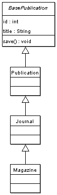

This chapter looks at some of the advanced options for the Propel object model.
By default all Base object classes extend the propel.om.BaseObject class, which provides a shared set of methods and properties that the objects use to track their modification state. In some cases you may wish specify a BaseObject subclass to use instead; you can do this from your XML data definition:
<table name="book" idMethod="native" baseClass="bookstore.BookstoreComponent">
Note that you must use the dot-path notation when specifying the new base class, as the class must be included before it can be referenced. The dot-path notation specifies a path relative to a location on the PHP include_path. Now the generated BaseBook class will extend BookstoreComponent. Note that BookstoreComponent must extend BaseObject, or PHP will generate fatal errors when you attempt to use your generated object / peer classes.
require_once 'bookstore/BookstoreComponent.php';
class BaseBook extends BookstoreComponent {
By default all Base peer classes do not have any super class. You may wish to specify a base peer class -- e.g. to provide some additional shared functionality used by your object model.
As with the base object class, changing the base peer class is possible in the XML definition:
<table name="book" idMethod="native" basePeer="BookstorePeer">
As you'd expect, the BaseBookPeer class now extends BookstorePeer instead of BasePeer. This class must provide all public/protected methods of BasePeer.
Propel provides basic support for implementing object-oriented inheritance (subclassing) your object model. There are several implementation options for mapping entity classes and subclasses to database tables. Propel uses the most efficient model from a SQL and query performance perspective: one table is used for all subclasses. This has the implication that your table must have all columns needed by main class and subclasses. Propel will create stub subclasses, but you must add logic to the peer class if you require that subclasses only contain a subset of the information -- i.e. by default all subclasses will be populated with the entire column row.
You must define a column in your table that will serve to identify which class should be used to represent the table row; do this using the inheritance="single" attribute (currently "single" is the only option other than the default, "false"). Also if the inheritance tree is known, you should use the <inheritance> tag to specify the class hierarchy. Note that this 'key' column must be a real column in your table.
<table name="publication"> <column name="id" type="INTEGER" primaryKey="true"/> <column name="class" type="INTEGER" inheritance="single"> <inheritance key="1" class="Journal" extends="bookstore.Publication"/> <inheritance key="2" class="Magazine" extends="bookstore.Journal"/> </column> <column name="title" type="VARCHAR" size="100"/> </table>
Important: you must specify the package prefix when indicating the parent classes (extends="package.ClassName") so that these clases can be properly included at the top of the subclass definitions; however, you cannot specify a package for the subclasses, because Propel only builds one package at at time (the one specified by the ${propel.targetPackage} property in build.properties) and it is required that the subclasses be part of the package you are currently buildling. Conceivably, the parent classes could be part of a separate package.
This code above will result in creation of 2 base classes -- BasePublicationPeer and BasePublication -- and 4 stub classes -- PublicationPeer, Publication, Journal (extends Publication), and Magazine (extends Journal).

Notice that only one base peer class is created. If you want to ensure that your subclasses only work with a subset of the columns from each row, you should override the BasePublicationPeer::populateObject() method to provide custom population based on object class. In many cases, however, the fact that objects of the correct class are returned may be sufficient in and of itself for your application needs.
If the inheritance tree is dynamic -- or unknown -- you may omit the <inheritance> tag and it is assumed that the key column will contain a classname -- using dot-path notation (e.g. "bookstore.Journal", "myapp.entity.MyClassName"). Also, you may override the base peer's getOMClass() to return the classname to use based on more complex logic (or query).
If you wish to enforce using subclasses of an entity, you may declare a table "abstract" in your XML data model.
<table name="publication" abstract="true">
Specifying that a table is abstract will generate abstract object stub classes, and will also require that you implement the getOMClass() method in your peer stub class (exception will be thrown if you do not).